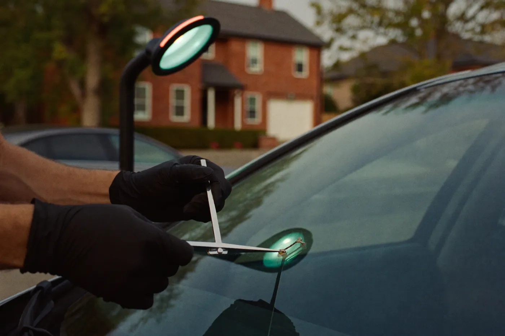

Windshield chip repair in Fort Worth fixes rock chips and short cracks before they spread across the glass. We fill the break with clear resin at your house or office, and most repairs are done in well under an hour.

The tech cleans the chip, sets a small injector bridge over it and pulls the air out of the break. Clear resin gets pushed in under pressure until it fills every leg of the chip.
A UV light cures the resin hard, then the surface is scraped flush and polished. The chip won’t vanish completely, but it usually fades a lot and, more to the point, stops growing.
Callers often ask, “How long can I wait?” Not long. A chip that has sat for months collects dirt and moisture that resin can’t fully push out.
A chip is a weak point, and Fort Worth weather keeps pushing on it. Glass expands in the afternoon sun and shrinks overnight, and every cycle stresses the edges of the break.
Potholes, slamming a door and hitting the defroster on cold mornings add to it. A chip that sits through one Texas summer has a good chance of running into a full crack.
The number of chips matters most, since the first chip and any extra chips are usually priced separately. Size and location matter too; a chip right in the driver’s view may not be a good repair candidate at all.
Insurance is the big one. Many insurers cover chip repair with no deductible, because a repair is cheaper for them than a new windshield. Call (817) 769-3783 and we’ll give you a free quote for windshield chip repair in Fort Worth.
| Chip repair | Windshield replacement |
|---|---|
| Chips smaller than a quarter and short single cracks. | Long cracks, cracks at the edge and damage in the driver’s view. |
| Keeps the factory seal and the original glass. | New glass and a fresh urethane seal. |
| Usually no camera calibration needed. | Calibration often needed on late-model cars. |
If the damage is too big to fill, read about windshield replacement in Fort Worth.
Most windshield chip repairs in Fort Worth take about 30 minutes, and you can drive right after. A second or third chip on the same windshield adds a few minutes each.
A repaired chip usually fades a lot but rarely disappears completely. The goal of windshield chip repair is to stop the break from spreading and keep the glass strong. Chips that are fixed early tend to look the best.
Many Texas insurers pay for windshield chip repair under comprehensive coverage and waive the deductible, because it costs less than a new windshield. Policies vary, so check yours or ask us when you call.
No. Chips larger than a quarter, cracks longer than a dollar bill, damage at the edge of the glass and breaks in the driver’s direct view usually need a new windshield instead. We’ll tell you which one fits after seeing the damage.
Call now for a free quote. We come to your home or office in Fort Worth.
Call (817) 769-3783 for a Free Quote